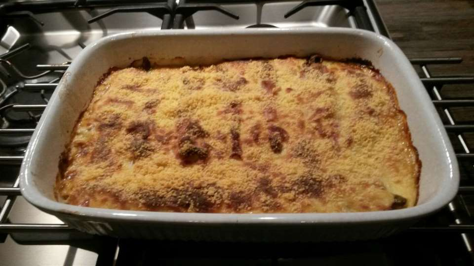

In België is "witloof" het gebruikelijkst, in Nederland "witlof". De Fransen noemen het meestal endives, of ook chicorées witloof, om de groente te onderscheiden van andijvie, dat in het Frans ook endive heet. Franstalige Belgen spreken van chicon, een woord dat in Frankrijk onbekend is, behalve in het uiterste noordoosten van het land. De Nederlanders spreken bij de teelt van "witlof trekken", sommige Vlamingen zeggen naar Frans voorbeeld "witloof forceren". Witloof wordt in sommige boeken ook Barbe de capucin genoemd.
Met de komst in de middeleeuwen van de Arabieren in Spanje werden in Andalusië nieuwe groentesoorten geïntroduceerd. Een van deze groenten was witlof.
De volkse overlevering wil dat witlof toevallig werd ontdekt omstreeks 1830 tijdens de Belgische Revolutie met Nederland vlak bij Brussel toen de boer Jan Lammers in Schaarbeek de cichoreiwortels in zijn kelder onder een laagje zand verstopte. Na enkele weken, door de milde winter, stelde hij vast dat de bittere wortels waren uitgelopen en dat de blaadjes zoet en mals smaakten. Hij kwam op het idee de witte blaadjes te verkopen als rauwe wintergroente, als wit loof, omdat er weinig andere groenten ter beschikking zouden zijn geweest. Nederland was afgesloten en er was weinig vervoer. Deskundigen doen dit verhaal af als een mythe.
Frans Breziers, cultuuroverste van de Plantentuin in Brussel, stond aan het begin van de ontwikkeling van witlof, toen hij in 1850-1851 witte kropvorming op de wortelen ontwikkelde. Hij ondervond dat duisternis, warmte en vochtigheid onontbeerlijk waren voor witlof. De witte bladeren ontstaan doordat het licht de plant niet kan bereiken. Zonder daglicht produceert de plant geen chlorofyl, de groene kleurstof. Het 'wit loof' werd voor het eerst in 1867 op de Brusselse markt verkocht en in de Parijse Hallen in 1883. De kroppen werden mettertijd groter en vaster door verbetering van de teelttechniek en door veredeling.
Mede door het succes van de groente gingen steeds meer landbouwers rond Brussel en Leuven over tot witlofteelt. In de eerste helft van vorige eeuw zorgde dat 'witte goud' zelfs voor een grote agrarische rijkdom. Tijdens de Eerste Wereldoorlog vluchtten Brabantse boeren naar Noord-Frankrijk. Zij hebben de teelt daar ingevoerd. In Nederland wordt witlof maar vrij recent op grote schaal geteeld, vooral sinds 1970, met de doorbraak van de witloftrek op stromend water. Deze teelt op water levert volgens veel Belgen niet de authentieke smaak op die grondwitloof tot de "echte" zou maken. Op dit ogenblik is Noord-Frankrijk veruit de grootste producent, gevolgd door België en Nederland. De teelt komt in andere landen weinig voor. De groente wordt naar vrijwel alle werelddelen geëxporteerd. Bron
